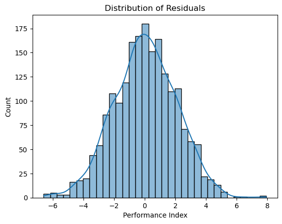

This walkthrough explores how multiple linear regression (MLR) is used to model and predict student performance based on various academic and lifestyle factors.
import pandas as pd
import numpy as np
import seaborn as sns
import matplotlib.pyplot as plt
dataset = pd.read_csv('Student_Performance.csv')We work with a dataset of 10,000 students, containing:
We start by analyzing data types, distribution, and visualizing feature relationships with the target variable.
Insights:
Binary Encoding for Extracurricular Activities:
dataset['Extracurricular Activities'] = dataset['Extracurricular Activities'].map({'Yes': 1, 'No': 0})Standardization for continuous variables:
from sklearn.preprocessing import StandardScaler
scaler = StandardScaler()
cols = ['Hours Studied', 'Previous Scores', 'Sleep Hours', 'Sample Question Papers Practiced']
dataset[cols] = scaler.fit_transform(dataset[cols])from sklearn.model_selection import train_test_split
X = dataset.drop("Performance Index", axis=1)
y = dataset["Performance Index"]
X_train, X_test, y_train, y_test = train_test_split(X, y, test_size=0.2, random_state=13)from sklearn.linear_model import LinearRegression
model = LinearRegression()
model.fit(X_train, y_train)print(pd.Series(model.coef_, index=X.columns))Equation of the fitted model:
Y = β₀ + β₁·X₁ + β₂·X₂ + β₃·X₃ + β₄·X₄ + β₅·X₅from sklearn.metrics import mean_absolute_error, mean_squared_error, r2_score
mae = mean_absolute_error(y_test, y_pred)
mse = mean_squared_error(y_test, y_pred)
rmse = np.sqrt(mse)
r2 = r2_score(y_test, y_pred)Results:
Residuals are evenly spread around 0 ; no pattern detected. Indicates assumptions of linearity and homoscedasticity hold.
Residuals appear normally distributed ; supports the assumption of normality.